Figures
Most of the text on this site, and most of the code behind it, was written by Anthropic’s Claude Code agents working under my direction. The outbreak produces a new situation report every day, and I wanted this data out fast and kept current, which I couldn’t have done by hand. The numbers are computed by the pipeline and checked against the reports (here’s how), but the writing was done in a hurry and will have mistakes. If you find one, please open an issue or get in touch. — Vince Buffalo
Every figure this repository commits, drawn from the current build, each with the caption that should travel with it wherever it’s used. Each release’s own version of these figures is on that release’s page.
ascertainment.png
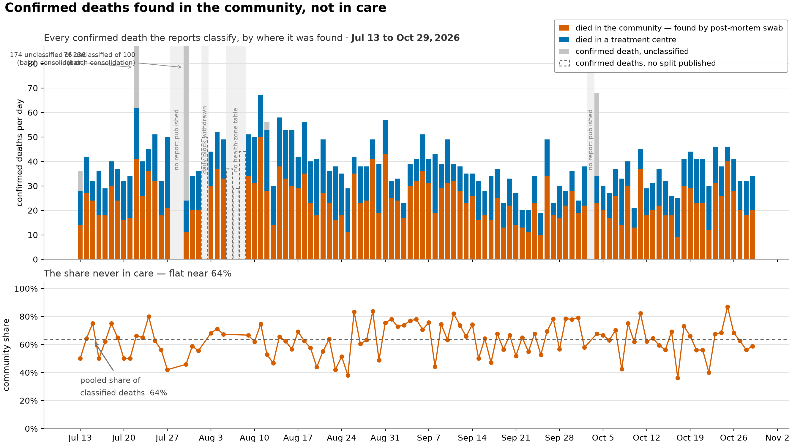
Where confirmed deaths were found, either in a treatment centre or in the community by a post-mortem swab, and what share of them the surveillance system never had in care. A death confirmed by post-mortem swab is someone the response never isolated. So the community share is the closest thing the reports print to a measure of ascertainment, meaning how much of the outbreak surveillance actually catches, and of how much transmission it’s missing. It’s the quantity downstream models most need.
- The share is drawn for each report day without smoothing, because whether it holds steady is the finding. A smoother would manufacture that steadiness. And if an extraction bug pushed the share up toward 1.0, a smoothed line would make it look like isolation collapsing rather than the parsing error it would be.
- It’s a share of classified deaths only. Deaths counted as confirmed but not classified as either community or treatment-centre are drawn separately in the upper panel and left out of the denominator.
- The unclassified count is floored at zero. On a few report days the printed community/treatment-centre split adds up to more than that day’s change in the cumulative death total. That’s an inconsistency in the source, not a negative number of deaths.
- Two reports that cleared a backlog put most of their deaths in the unclassified column. Left alone they’d set the vertical scale for the whole panel, so those bars are clipped and labelled with their true totals. No number is lost.
- The pale bands that mark missing days have three different causes, and the figure prints which one applies. INSP published no report; the report was published but this repository withdrew its daily block; or the report printed no health-zone table, which is the only place the community/treatment-centre split ever appears. The second is our own decision about a page, not a failure of the source, and it’s labelled as ours.
ascertainment_provinces.png
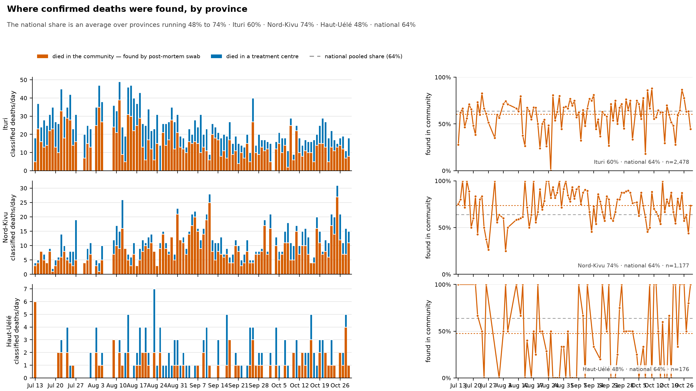
The same split as ascertainment.png, one row per province, because the national share isn’t really one quantity. It’s a weighted average over provinces whose own shares differ by tens of percentage points, with weights that shift as the outbreak moves between them. The subtitle gives each province’s pooled share and the national one as of the current build.
- This matters for a model. A single national ascertainment probability ends up fitting that average. When the outbreak’s centre of mass moves from one province to another, the national share moves with it, and a model with no province structure will read that as a change in how deaths are found rather than in where they happen.
- Counts and shares get separate columns rather than one panel with two scales. They’re different measures, and putting the share on a second y-axis over the bars is the standard way to make a chart nobody can read.
- The counts column is what keeps you from over-reading the share column. Haut-Uélé has a small fraction of Ituri’s classified deaths (each row prints its total as
n=), so its share swings between 0% and 100% on days when two deaths were classified. The bars show which points carry weight. The dotted line in each row is that province’s pooled share over the whole window, and that’s the number to quote. - The order of provinces is fixed in the code rather than taken from the data, so each province stays in the same place from one release to the next and you can compare releases.
- Only Ituri, Nord-Kivu and Haut-Uélé get a row, and that list is fixed in the code too. The other affected provinces have each classified only a few deaths, too few for a share to mean anything, so a new province gets a row only when someone adds it.
care_ledger.png
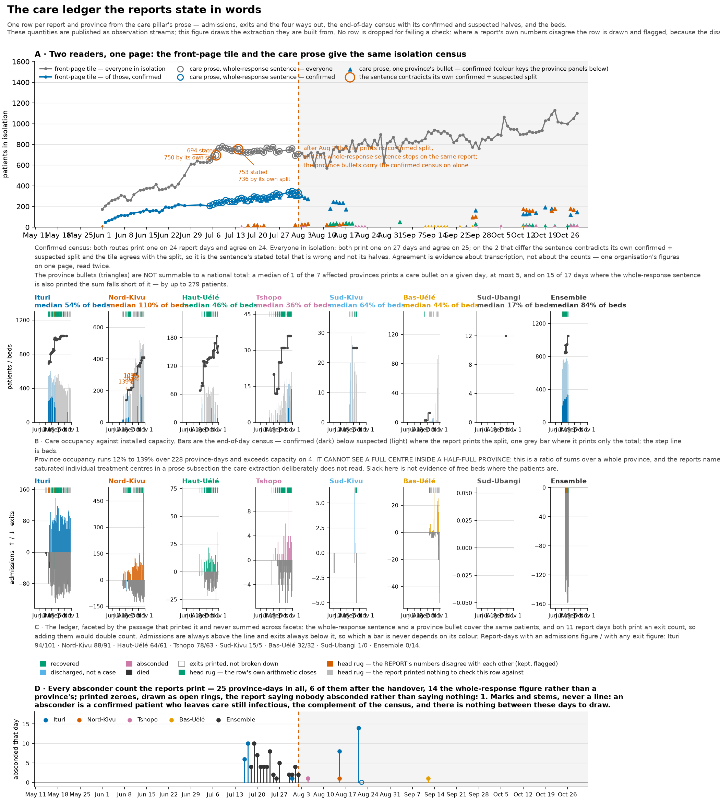
The record of patients in treatment centres that the reports give in words rather than tables: whether we can believe it, and what it says. There are four panels: the isolation census read two ways, occupancy against beds per province, admissions and exits, and counts of absconders.
The first panel makes the case for trusting the data rather than showing the data itself. Two readers in this repository take the isolation census from different parts of the same page, the front-page dashboard tile and the whole-response sentence in the care section, and they agree. That agreement tells you about the transcription, not about whether the counts are right. It’s one organisation’s numbers on one page, read twice. What it rules out is a misreading, which is the error this way of extracting the data is actually exposed to.
- The census is published in a form that changes partway through. On the same report, the front-page tile stops printing the confirmed part and the whole-response sentence stops altogether. After that, only the per-province bullets carry the confirmed census. The figure marks that handover and shades what follows.
- Don’t add up the province bullets to stand in for the whole-response sentence. On most days only some of the affected provinces print a bullet, so the sum is a partial total, and it would look like the census collapsing.
province_census_is_not_nationalmeasures how partial it is. - Admissions and exits are drawn side by side rather than stacked, for the mirror-image reason. On report days where both the whole-response sentence and the province bullets give an exit count, the two passages describe the same patients at different levels of geographic detail (national versus province), so adding them would count the same discharges twice. The figure says how many days that affects.
- Occupancy is total patients over total beds across a province, so it can’t see one full centre inside a half-full province. The reports name individual saturated treatment centres in a prose subsection that this extraction deliberately doesn’t read. Spare capacity in this panel doesn’t mean there are free beds where the patients are.
- Absconder counts are drawn as separate marks and never joined into a line, because a line would claim values on days when no report printed one. A printed zero (“aucun évadé”, no absconders) is an observation and is drawn as one, with an open ring.
- No row is dropped for failing a check. Where a report’s own numbers disagree, for instance where the stated census contradicts the confirmed-plus-suspected split in the same sentence, the row is drawn and flagged. The disagreement belongs to the source, not to the reader.
- These quantities are released as streams (
care_*.tsvindata/build/streams/, described in that directory’sREADME.md). The figure is the reason to believe them, and the streams are what a downstream model should read.
comparison.png
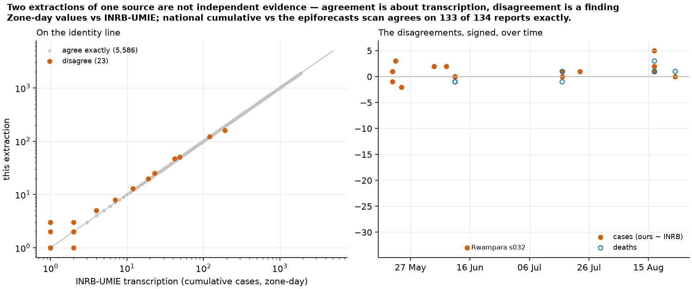
Every zone-day value this repository extracted, plotted against INRB-UMIE’s transcription of the same reports. On the left, the two values against each other, where agreement falls on the diagonal. On the right, the signed disagreements over time. Disagreements bigger than a few cases are labelled with the zone and report they come from.
Two extractions of the same source aren’t independent evidence, so agreement only speaks to transcription. A disagreement, on the other hand, is always worth knowing about: either one reading is wrong, or the two read different versions of a report the source revised in place. That asymmetry is why the comparison is worth doing.
- The denominator is only the rows both files have (an inner join), and that’s a biased set. Our newest reports don’t have a counterpart in their file yet, and those rows, the most recent and least reviewed part of the data, are outside every agreement number quoted. The counts of unmatched rows are in
compare_meta.json. - Zones that the two sources spell differently are mapped to one name for the comparison only. That says the two spellings refer to one place, not that either spelling is correct. Without the mapping, a spelling difference would just make the rows disappear instead of showing up as a disagreement.
- A labelled disagreement isn’t automatically our mistake. At least one of the large ones is on INRB’s side: a report prints the same total for one zone in its table and in its narrative, and the INRB file has a different value.
- The check of the national cumulative total against the epiforecasts transcription is given in words rather than plotted, because a long run of exact zeroes just draws as a line along the axis.
comparison_series.png
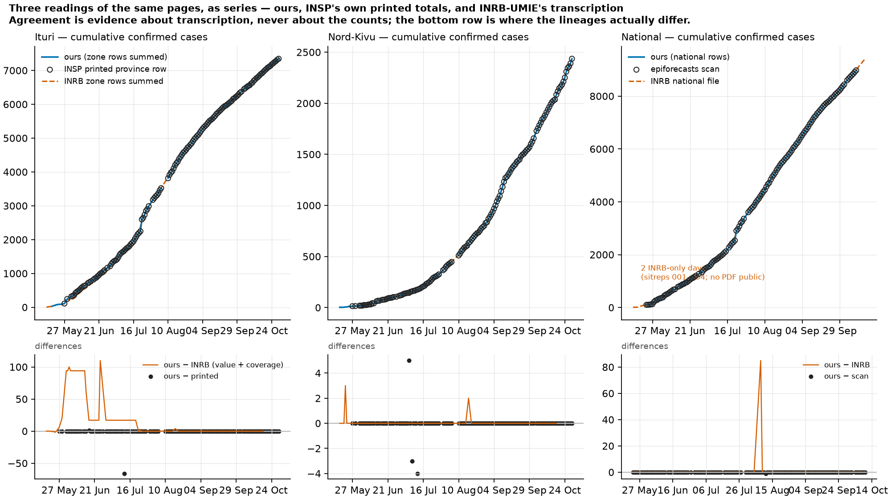
The same three sources as time series rather than a scatter plot, for Ituri, Nord-Kivu and the country, with the differences underneath. The solid line is our health-zone rows added up. The rings are INSP’s own printed provincial row in the two province panels, and the epiforecasts transcription in the national one. The dashed line is INRB-UMIE’s transcription.
- The two difference rows mean different things. Ours − INRB mixes value disagreements with differences in which rows each file has: a zone-day missing from their file lowers their total without anyone having read a number differently. Ours − printed is pure arithmetic against the same page, and it’s zero everywhere except the places where the source disagrees with itself, which are recorded in
registers/. - INRB rows are assigned to provinces using the health-zone geojson, because their file has no province column. Rows whose zone is literally
NAcan’t be placed and are left out, which is one visible reason their provincial total can come in below the printed row. - Their file has one malformed date, a stray bracket left by their own build. It can never be matched to anything, and it can’t be plotted.
- A few early days exist only in their file. These are the outbreak’s first reports, which INSP’s website no longer lists. Theirs is the only source that has them, and nothing can check it.
- A difference panel that’s zero everywhere gets a small fixed range, so it reads as zero rather than as floating-point noise.
epi_curve.png
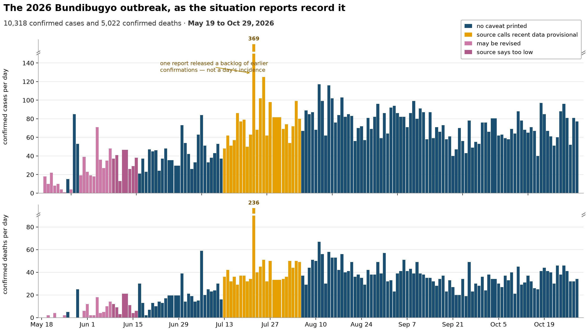
Confirmed cases per day and confirmed deaths per day, exactly as the situation reports (the daily bulletins INSP publishes, which I’ll also call sitreps) record them, over the whole archive. This is the outbreak itself, and it’s the opening slide.
- Each bar’s height is a daily rate and its width is the reporting window it covers, so the bar’s area is the count. A report covering several days shows up as one wide, low bar rather than one tall one. If you read heights alone, a multi-day report would look like a quiet day.
- The tallest bar in the case panel is not one day’s incidence (new cases). One report released a backlog of earlier confirmations all at once, and the figure labels that bar with its true count and says so. The same thing happens, on a smaller scale, in the death panel. An analysis that treats those bars as incidence on the date they’re printed under will put a spike where there wasn’t one.
- Both panels use a broken vertical axis, drawn with break marks. The two pieces of the axis are forced to the same number of units per pixel. When the two halves of a broken axis run at different scales, that’s a second, hidden distortion on top of the break itself, and this one avoids it.
- A bar’s colour is the caveat the source printed on that report: data still consolidating, may be revised, revised and stated to be too low, or the health-zone breakdown out of date. A coloured bar isn’t a bad number. It’s the source telling you the number may still move.
- Both series come from differencing a published cumulative total, and that’s why dividing by the reporting window is right here. It would be wrong for the streams built by summing daily flows. In those, the same
days_coveredcolumn means the gap since the previous observation instead.
lab_effort.png
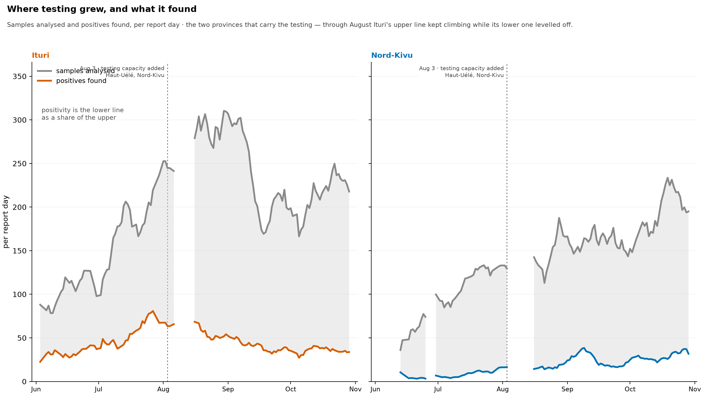
The two halves of the positivity ratio drawn separately: samples analysed and positives found, per report day, for Ituri and Nord-Kivu, the two provinces that do most of the testing, on one shared count axis.
- I made this figure because the ratio can’t answer the question its own movement raises. Falling positivity fits both less disease among the people tested and more people being tested, and the ratio alone can’t tell those apart when both its parts have moved. Drawing the parts separately can.
- Here’s how to read the panels. Where the upper line climbs and the lower one doesn’t rise, as Ituri’s did from late July through August, testing is up, cases found are unchanged, and positivity falls as a matter of arithmetic rather than epidemiology. Where the lower line climbs faster than the upper one, more disease is being found per sample. Reading one province against the other over the same weeks is the nearest thing this figure has to a control.
- The gap between the two lines is the negative results, not the positivity. Positivity is the lower line as a share of the upper one. The figure says so on its face because the looser reading is the easy one to reach for.
- Values are per report day, an average rather than a total. The source doesn’t publish every day. A week with four reports and a week with seven both span seven calendar days, so a weekly total would drop when reports thin out and rise when they resume, which tells you about publishing, not testing.
- Here’s what this doesn’t show. Positives that hold level or dip slightly while testing rises aren’t evidence that transmission rose, and a window of a couple of weeks of reports is short. The claim this supports is narrow and negative: Ituri’s falling positivity over August can’t be read as falling incidence. It doesn’t show that incidence is known to be flat.
- Validated rows only, for the reason given under
positivity_provinces.png: the excluded rows count re-tests among their positives, and would put a step in the lower line that the extraction introduced. - Only the two provinces with the largest testing volume are drawn. The others contribute far fewer samples a day and would be near-flat lines along the axis (
positivity_provinces.pngstacks every province).
national_detail.png
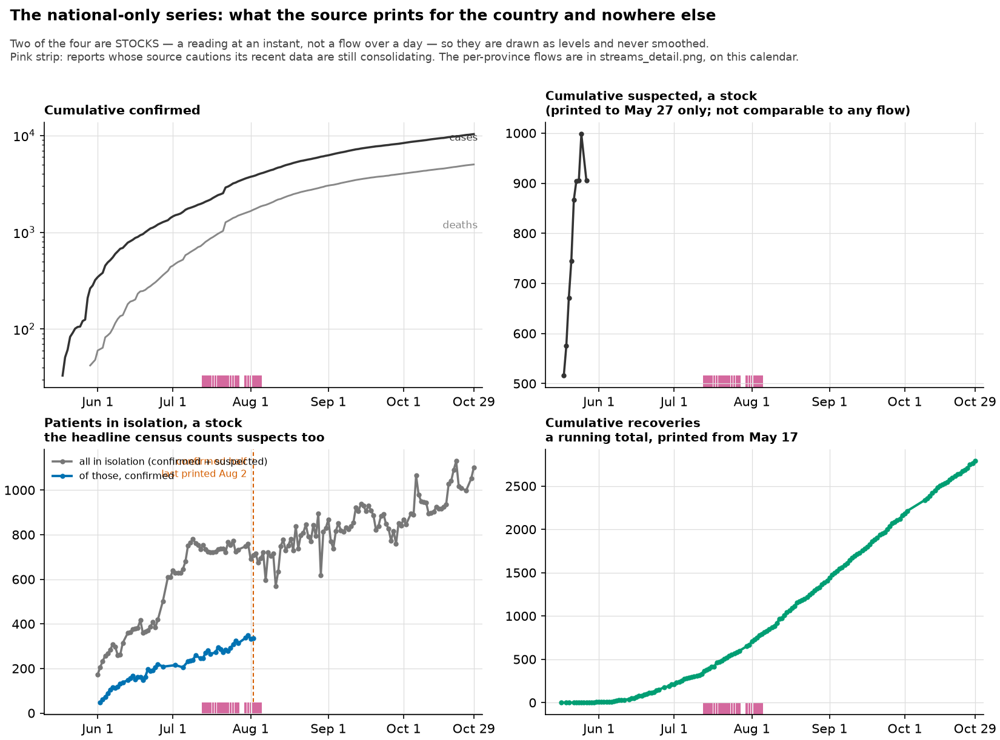
The series the reports print for the country as a whole and for no smaller area, in four panels: cumulative confirmed cases with cumulative confirmed deaths, cumulative suspected cases, the isolation census, and cumulative recoveries. It uses the same archive calendar as streams_detail.png.
- Two of the four are stocks, a reading at one instant rather than a flow over a day, so they’re drawn as levels and never smoothed. Taking differences of them wouldn’t give you new cases.
- The cumulative suspected series is a stock that the source stopped printing early, and it can’t be compared with any flow. The panel title gives the date it stopped, read off the series rather than typed in.
- The headline isolation census counts suspected cases as well as confirmed ones, with suspected cases making up a median of about three fifths of it. Only the confirmed part tells you about confirmed cases in a model, so the two are drawn separately.
- The confirmed part stops before the rest. The figure marks that date with a vertical line.
care_ledger.pnguses the same date, worked out the same way, to argue that the prose in the care section carries the quantity on after it. - The pink provisional strip means the same thing here as in
streams_detail.png.
outcomes.png
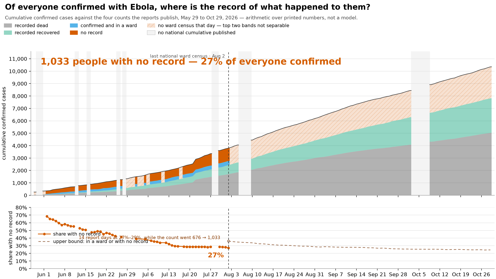
Of everyone ever confirmed with Ebola, where is the record of what happened to them? The cumulative confirmed case count is split across the three published tallies that could hold such a record: the death total, the cumulative recoveries, and the census of confirmed patients currently in an isolation ward. The top band is whatever none of the three accounts for. The lower panel shows that band as a share of all confirmed cases.
The split is plain arithmetic on four numbers the reports print: the case total and those three tallies. Nothing is fitted, nothing is a rate, and I make no assumption about how long a patient stays in care. The four bands add up exactly to the published cumulative case total. That exactness is the only reason the top band can be read as a count of people, rather than as the gap between two estimates.
“No record” means no record in these four published counts. It doesn’t mean anyone is untraced. The response works from a case line list (a patient-by-patient register), which isn’t published, and this figure can’t see it.
Recorded exits from care are incomplete. A patient who absconds (leaves care while still infectious) is booked as neither recovered nor dead (see scripts/care_ledger.py). So the recovery count is a lower bound, and recoveries that never got recorded end up in the top band instead.
Absconding, unrecorded recovery, unrecorded death and reporting lag all sit inside the top band, in unknown proportions. Nothing in these four series separates them, and neither the figure nor this caption claims to know which is which.
The figure draws three things that the legend can only name:
- The pale vertical spans are report days with no national cumulative count or no recovery count. They have four distinct causes, which you can’t tell apart from the gap alone: INSP published no report that day; a report appeared but printed no health-zone table (a health zone is the DRC’s district-level health administration unit); a health-zone table appeared but printed only its 24-hour columns; or the table is complete and the front-page recovery tile couldn’t be read. On sitreps 143–147 a highlight bullet is drawn over the tile row, and I refuse those tiles rather than guess them. The bands are drawn piece by piece between the gaps rather than across them, because carrying a cumulative band over a gap would show a value the source never printed.
outcome_gapsworks out the cause of each gap, and a test requires every gap to have one. - The hatching, and the dashed line on the census’s last day. The national census of confirmed patients in isolation is published for the last time on the report of 2 August 2026. This repository reads it two ways, from the front-page tile and from a whole-response sentence in the care section, and both stop on that same report. The per-province bullets keep going, but they don’t add up to a national figure (see
care_ledger.png). After that day I don’t draw the boundary between the ward band and the top band, because nothing published says where it is, and the two are shown as one hatched region. Carrying the ward band on at zero would count every patient in a bed as unaccounted for, and stopping the figure there would suggest the top band stopped growing. Neither is true. This same handover is why the lower panel switches at that date from a solid line (a measured share) to a dashed one (an upper bound): after it, all we can say is that someone is in a ward or has no record. - Don’t read the fall in June as an improvement. The share drops from about two thirds to under a third across June and early July, for two reasons that have nothing to do with how many people the response was finding. A case confirmed last week has no outcome recorded yet, whatever ends up happening to it, and the recovery and ward tallies themselves only begin partway through that window. What the panel actually argues from is the flat stretch at the end, 14 report days at 27–29% while the count itself went from 676 to 1,033, and not the slope leading into it.
- The share line is broken, not cut short. Every report day that carries all four counts is drawn, and the line breaks where a day carries none, meaning a day with no bulletin or no census, which the panel above marks. The two panels share a calendar, so the line at the census’s last day sits in the same place in both.
positivity_provinces.png
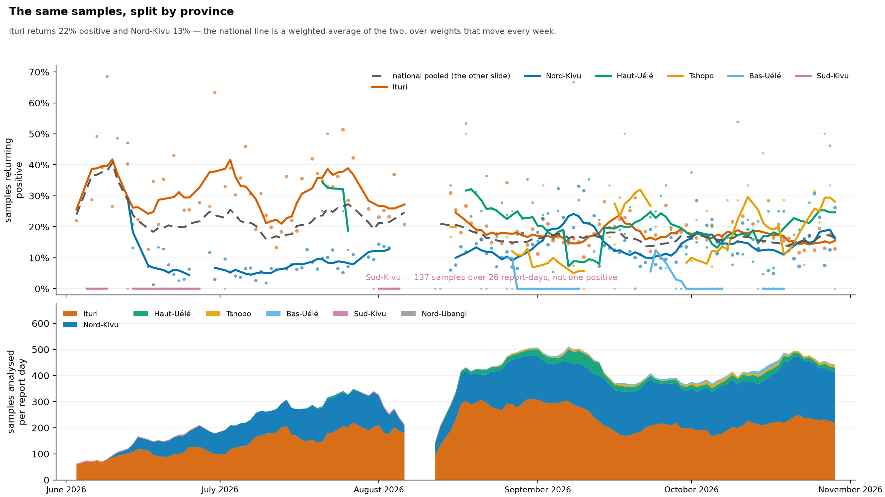
The same laboratory samples as test_positivity.png, split by the province the source reports them under. The two figures are a pair, and this one only makes sense next to the first: the grey dashed line here is the blue line there. The upper panel shows each province’s own pooled positivity, with one faint point per province-day sized by samples. The lower panel shows samples analysed per report day, stacked by province.
- The national rate is a weighted average of provinces with very different positivity, with weights that swing every week. The subtitle gives the current pooled rates of the two largest testers, and the lower panel shows how each province’s share of all samples moves. The pooled line tracks no single province. It follows Ituri closely in early June, when nearly every sample was Ituri’s, and pulls away from it as other provinces’ shares grow.
- Sud-Kivu shows most clearly that these aren’t one population. It returns no positives at all on every sample it reports (the figure labels the total). That’s a province testing for an introduction it hasn’t found, and those samples go into the national denominator exactly like Ituri’s do.
- Pooling mostly preserves the shape of the line but not its level. Holding the province weights fixed barely changes the line’s week-to-week range, so the national line isn’t just an artefact of the province mix. But in late June and July, Ituri sits well above the pooled line. Reading the pooled level as “the positivity in this outbreak” means reading a diluted number.
- Pooling also hid something. Ituri’s own rate stays high from June to early August, then falls through August, while Ituri’s samples per report day climb steeply over the same weeks (lower panel). More testing alongside falling positivity is what case-finding catching up looks like, and the national line barely shows it.
lab_effort.pngdraws the two parts of Ituri’s ratio separately. - A break in a line means this series has no observation, not that the laboratory went quiet. Some candidate laboratory rows are rejected, most of them because the sentence didn’t make it possible to pin down which number was the sample count and which was the positive count. These figures also draw only the rows whose positive count is comparable (see below), so their breaks are wider than the extraction’s own coverage. Part of the gap in early August is the source’s:
lab_prose.csvhas no laboratory row for any province from 7 to 10 August. - The figures draw only validated rows, and that’s why there’s a gap over mid-August.
lab_prose.csvhas two kinds of row. Where the report printed its own positivity, the positive count is the one that reproduces that percentage, and it usually equals the day’s new confirmations exactly. Where no rate was printed, the count is all positive results, including re-tests of people already confirmed, and it runs consistently above new confirmations. Both are real and they answer different questions, but a line that switched from one to the other in mid-August would show a step that the extraction introduced. The unvalidated rows stay in the extraction for anyone who wants the total number of positive results. - A province gets a line only if it has at least 15 province-days; with fewer, a line through a handful of points would look like a trend. Provinces with fewer are shown as points only.
- The lower panel is samples printed, not samples taken. A province counts as zero on days its report has no laboratory paragraph, which is the report being silent, not a measurement that no testing happened. The number of provinces reporting changes from day to day.
- Province is as fine as the data goes. The laboratory paragraph is written per province, and the reports have no testing data by health zone anywhere, so you can’t build a health-zone positivity map from this source.
positivity_provinces_annotated.png
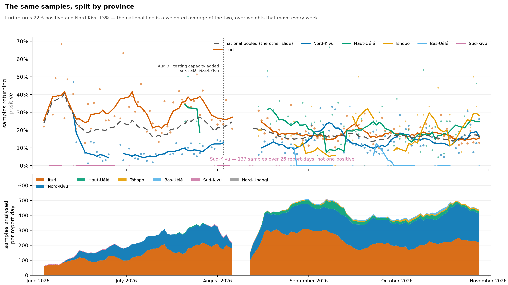
positivity_provinces.png with marks added for changes in laboratory capacity, and identical in every other way. The two are meant to be shown one after the other, plain figure first, because the difference between them is exactly what we gained by reading the reports for statements about capacity.
- The plain figure isn’t an edited-down version of this one. It declares fewer inputs: it doesn’t read
registers/lab_capacity_events.tsvat all, so it really is what the pipeline produces without that extraction. - Each mark names the province it belongs to, and that matters here. The marks are for Nord-Kivu and Haut-Uélé, while Ituri, whose testing rose the most over July and August, has no capacity statement in any report read so far (
registers/lab_capacity_events.tsvlists every recorded event). The marks shouldn’t be taken as explaining Ituri. - Every caveat on
positivity_provinces.pngapplies here unchanged.
province_overview.png
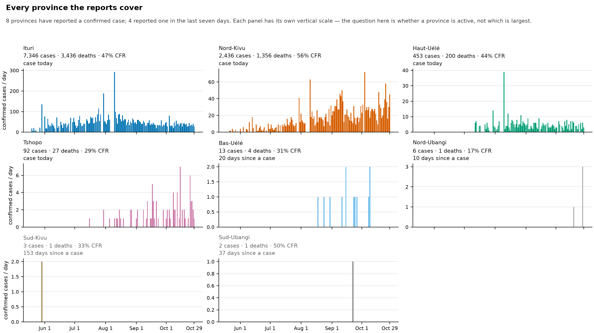
One panel for every province the reports have ever recorded a confirmed case in. I made this figure because leaving it out caused a mistake. streams_detail.png drew two provinces at the time, and someone read the absence of the other four as the source not reporting them. In fact the source reported all six the whole time, and we extracted them the whole time. They just weren’t being published as streams.
- Each panel has its own vertical scale, on purpose. The largest province runs to dozens of confirmed cases a day and the smallest to one or two. A shared scale would answer “which province is biggest”, which nobody needed to ask. A separate scale answers “is this province active”, which is the question that went wrong.
- The three numbers in each heading are the ones that tell a finished province from a quiet one: cumulative cases, deaths and case fatality ratio (CFR, the share of cases who died), and how many days it’s been since the province last reported a case. A province with no case for more than three weeks is drawn in grey.
- The figure draws the published streams, not the daily column printed in the reports. That column only exists in some report formats, and it left Ituri blank from June to mid-July. Drawing the streams also makes this figure a check on publication: if a province stops being published, it loses its panel, and the missing input stops the build.
- It draws the streams that exclude backlog releases, so the 22 July harmonisation doesn’t set the scale. On that day Ituri’s printed cumulative moved by 347 while the report’s own count of the day’s new Ituri cases was 73; the excluding-backlog stream carries the 73. See the CHANGELOG entry for
data/2026-08-29-r2. - Unlike
epi_curve.png, a bar here is the count for one report’s whole window, drawn one day wide and not divided by the days it covers. A report covering several days therefore shows up as one tall bar. The two tallest Ituri bars, at the end of July and in early August, are reports covering three and five days, not single-day spikes. - Days since a case isn’t the same as days since transmission. In late August, Sud-Kivu had gone nearly three months without a confirmed case and still held about two dozen suspected cases in isolation.
release_grid.png
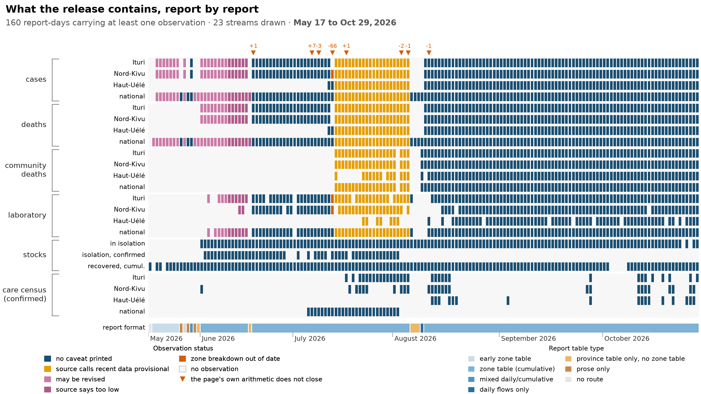
What a release actually contains, report by report. There’s one cell per released stream per report day, grouped by quantity (cases, deaths, community deaths, laboratory, stocks, and the confirmed care census), with a band underneath showing which report format was in use.
The coverage isn’t a neat rectangle, and the holes are what the figure is for. The laboratory rows have holes wherever the reports’ prose doesn’t name provinces. The stock rows (stocks being counts at a moment, like patients currently in care, rather than flows over a day) start at different points, partly because the source didn’t print the quantity yet, and partly because the early dashboard printed its tiles above their labels rather than below, which the reader that parses the front-page banner couldn’t follow.
- This shows what makes it into the release, which is less than what the source states. The
availabilityfigure shows the latter. It’s an exploratory figure underdata/build/figures/and isn’t committed, so it has no caption here. - The rows drawn are a chosen subset, not the whole release. The weekly files are the same quantities binned by week. Most of the care ledger is published and documented in
data/build/streams/README.mdbut not drawn here, because dozens more rows would make the grid unreadable. That’s why the subtitle says streams drawn and not published streams. - A cell is an observation, not a row in a file. Streams with no observed report day are left out rather than painted, because painting them would claim the release contains data it doesn’t.
- A cell’s colour is the report’s own caveat, using the same categories as
epi_curve. Where a report day has several caveats, the first one recognised wins, so the grid under-reports days with more than one. - The triangles above the grid are reconciliation exceptions, meaning report days whose own arithmetic doesn’t add up. Each is labelled with the signed difference, because “doesn’t add up” covers anything from a single miscounted case to the sixty-six-case provincial discrepancy in July. Where a date has several, the largest is shown, so it bounds the rest.
- A report with no health-zone table isn’t a gap in the format record; it’s a format of its own. A few reports dropped the zone table but kept the provincial summary, and the earliest reports were prose only.
response_timeline.png
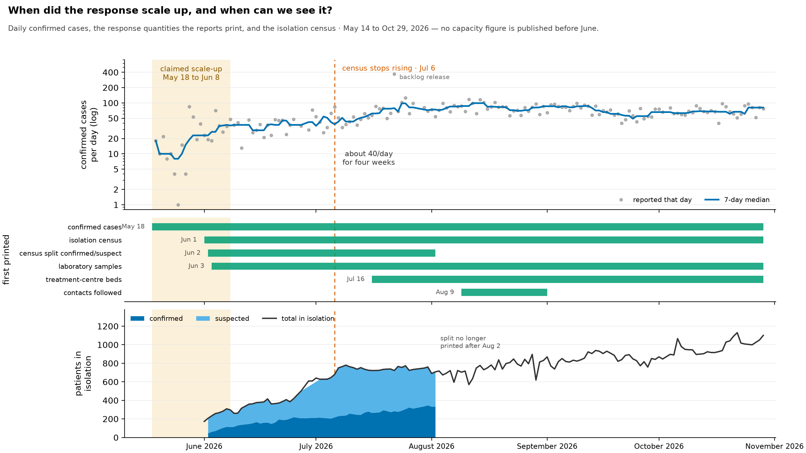
Can a claimed scale-up of the response be checked against the situation reports, and what did the epidemic do over the period it’s claimed for? The shaded band is a timeline asserted outside this repository: a scale-up that begins with the first situation report and is complete three weeks later, on 8 June. The three panels share one calendar. The top shows daily confirmed cases on a log scale, the middle shows the first day each measure of the response appears in the reports, and the bottom shows the isolation census split into confirmed and suspected patients.
- The first situation report is dated 14 May, not 18 May. SitRep 001 is dated 14 May and SitRep 002 17 May, and both are in the archive. Neither gives a table a machine can read. SitRep 001’s health-zone counts are inside an image that the PDF’s text layer doesn’t include, and SitRep 002’s table is transposed into a layout none of our registered table layouts match. So both come out as
no_matching_table(our status for a report with no table we could read), and the national series starts at SitRep 004. 18 May is where the data starts, not where the response started, and anyone anchoring a response milestone there is anchoring it to a quirk of extraction. - The middle panel shows how far this figure can go. A scale-up is a claim about capacity, and the reports print nothing about capacity during that window. Of the six response measures extracted here, only the case count exists before June. Beds first appear in mid-July and contacts came in August. So any statement about a May scale-up is inferred from how the epidemic behaved, not read from reported capacity.
- The top panel shows a change in pattern, not its cause. Incidence climbs steeply through the claimed window, holds near 40 cases a day for roughly four weeks afterwards, then rises again from early July. The slowdown lining up with the claimed window is consistent with a response taking effect. It’s just as consistent with anything else that changed over those weeks, and this figure can’t tell them apart.
- Early growth is inflated by surveillance expanding. The number of health zones reporting cases grows severalfold over the series, fastest in the first weeks (
zone_spread.pngcounts them fortnight by fortnight), so some of the early rise is the system finding cases rather than the epidemic producing them. This makes the apparent slowdown look bigger than it is, and it’s the main reason not to read the top panel as the size of an effect. - The seven-day line is a median, because the series contains backlog releases. On 22 July the national cumulative moved by 369 confirmed cases (the report’s own count of that day’s new cases was 97) when the days around it run 50 to 125, and 30 July prints 245 covering three days. With a mean, the week of 20 July reads about 120 cases a day; with the median it reads
- The census levelling off in July is not a bed shortage. The isolation census stops rising in the same weeks incidence starts rising again, which means a shrinking share of cases is in a bed. Through July and August, Ituri, which holds most of the patients, sat well below its bed capacity (
streams_detail.pngdraws each province’s census against its beds). The ledger points to faster turnover instead. In Ituri, admissions go from 70–86 a day in mid-July to mostly 75–140 a day in the second half of August while the census holds near 500–550, which is shorter stays with a steady number of patients rather than a ward filling up. - Neither marked date is a fitted change point. The band is the outside claim as stated, and the 6 July line is the week the weekly mean census stops climbing. I ran no change-point test on either series, and the figure claims none.
- The confirmed/suspected split of the census ends because the source stopped printing it after SitRep 080 on 2 August, not because the series ended. The total carries on.
streams_detail.png
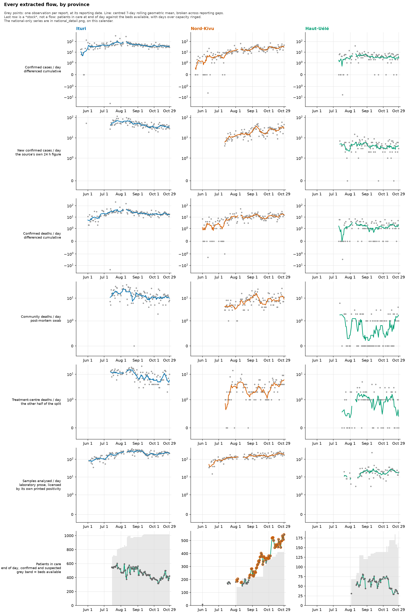
The daily flows per province, as small multiples: confirmed cases, the source’s own 24-hour case figure, confirmed deaths, the community and treatment-centre parts of the death split, and laboratory samples analysed. A last row adds one stock, patients in care at the end of each day against the beds available, with days over capacity ringed. There’s one column for each province carrying a sustained share of the outbreak.
- Grey points are one observation per report, placed at its reporting date. The line is a centred seven-day rolling geometric mean, and it breaks across reporting gaps. A line drawn across a gap would claim a level on days the source said nothing about. In one case a report printed an early 24-hour figure and the next one came six weeks later, and joining them drew a six-week plateau out of a single point.
- There’s one point per report, not one per calendar day. If you fill a daily grid forward and then take differences, you manufacture a zero on every day without a report. A zero you see here is real: a report that printed an unchanged cumulative total.
- Negative increments are left out of the rolling window rather than set to zero. A negative increment is the source revising its past, not an observation of zero new cases. The vertical axes use a symmetric log scale, so those revisions stay visible instead of being flattened.
- The pink strip along the bottom of each panel has one bar for each report whose source warns that its recent data are still consolidating. It’s drawn as bars rather than a shaded period, because the warning is a rolling statement about each report’s own most recent days. Shading the whole span would suggest late July is still provisional, when most of it has since settled.
- The x-axis covers the whole archive, not just the data drawn. A stream that starts in mid-July has to show the empty weeks before it, or its late start would look like a full history.
- This figure and
national_detail.pngshare one calendar, taken from the report index rather than from either figure’s own data, so you can put the two side by side without silently comparing different time spans.
test_positivity.png
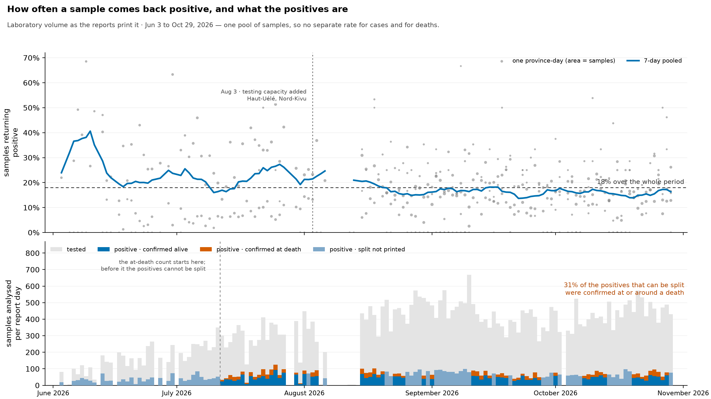
Test positivity, the share of laboratory samples that come back positive, over time, and what those positives were. In the upper panel, each grey point is one province on one day, sized by the number of samples, and the line is pooled over seven days. The lower panel shows samples analysed on each report day, with the positives drawn inside them and, where the source allows, split into confirmations made on a living patient and confirmations made at or around a death.
- The positives can be split, but the samples can’t, and that answers the obvious question. There’s no separate positivity rate for suspected cases and for community deaths, because the laboratory paragraph prints one pool of samples per province, with nothing about where any of them came from. Two rates would need two denominators. The lower panel is a breakdown of the positives, not a second rate, and reading it as one would invent a number the reports don’t contain.
- What the positives are can be broken down, because confirmations made at or around a death are printed separately. On the validated rows (see
positivity_provinces.png), lab positives equal the day’s new confirmations on the large majority of province-days where both appear, and that’s what justifies treating one as the other. - The count of confirmations at death starts in mid-July, so positives before that are drawn as a single band. A day only counts as split if every province that reported laboratory volume that day also gave the at-death count. The handful of partial days are shown unsplit, because a national breakdown built from only some provinces isn’t a national breakdown.
- The number of bodies swabbed after death would be the missing denominator, and it isn’t a series. A count appears in only a scattering of reports, sometimes national and sometimes provincial, sometimes for the day and sometimes cumulative. It could give a handful of one-off estimates, but not a curve.
- The pooled line is total positives over total samples, not an average of each province’s percentage. Provinces report very different volumes on the same day (a handful of samples in one, hundreds in another), and averaging the daily percentages would give a five-sample province-day as much weight as a large one.
- The pooled line breaks where this series has no observation, so it’s never drawn across days it doesn’t cover. A break doesn’t mean the laboratory went quiet. It can just as well be a sentence this pipeline couldn’t read, or a row left out because its positive count measures something different (see
positivity_provinces.png). - Where the source prints its own percentage, the rate matches it to within rounding (0.15 percentage points for a percentage printed to one decimal) on all but the rare province-day. So the upper panel is a reading of the page rather than a recalculation that could drift away from it.
- High positivity is expected here and isn’t evidence of under-testing on its own. Testing targets people with symptoms who are suspected cases, and deaths; it isn’t a sample of the population, so this rate can’t be compared with the population-screening benchmarks used for other diseases. What it can tell you is how stable it is. If the level holds steady while daily confirmations grow, testing is growing along with the epidemic rather than falling behind; compare the pooled line with
epi_curve.pngover the same weeks.
validation.png
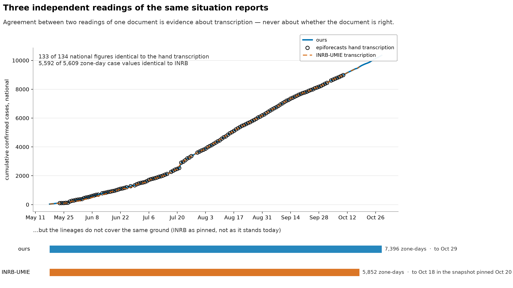
Three readings of the same situation-report PDFs compared with each other: this repository’s extraction (which reads the table layout geometrically from the PDF), the hand transcription by epiforecasts, and the transcription by INRB-UMIE. Underneath, how much ground each one actually covers.
This is the main caveat, not a footnote: when two readings of one document agree, that tells you about the transcription, and nothing about whether the document is right. All three read the same pages and inherit whatever the source got wrong. The figure says this in its own subtitle, because otherwise people read “validated” as “correct”.
- Agreement is easy where the readings overlap, and the overlap is the smaller part of the picture. The lower panel is there so the figure can’t be read as saying the three are interchangeable. They cover different time spans and different numbers of zone-days.
- The INRB side is a pinned snapshot, not INRB’s data as it stands today. The commit and date are in the committed
external.lock, and the figure prints them. If we said “we run later” without saying that, we’d be comparing our current data against an old checkout and calling the difference a win on coverage. - The national series is the printed national cumulative total, not a running sum of the daily figures. Summing the daily increments from zero starts the curve tens of cases too low, so the two aren’t interchangeable here.
- The agreement counts on the figure are read from
data/build/compare/compare_meta.jsonwhen it’s drawn.
zone_spread.png
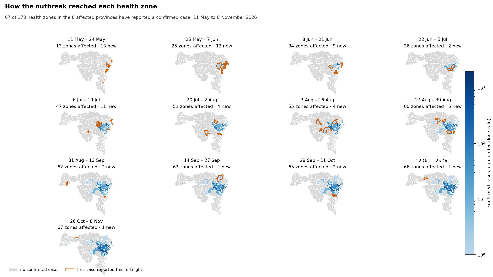
Where the outbreak was at the end of each fortnight, and which health zones reported their first confirmed case during it. The subtitle says how many of the health zones in the affected provinces have reported one so far, and each panel’s heading counts the zones affected by then and the new ones.
- The map uses two encodings for two questions. The fill colour is the zone’s cumulative confirmed cases, and the orange outline marks zones reporting their first case in that fortnight. The outline is there because the fill can’t show arrival: a zone going from 0 to 3 cases barely changes colour, and that arrival is the most important thing on the panel.
- The fill is on a log scale. Cumulative counts across affected zones span orders of magnitude, from the hardest-hit zones such as Bunia down to zones with a case or two. On a linear scale nearly every zone would be the same colour.
- Unaffected zones are drawn too, in grey. A map of only the affected zones would make the outbreak look as if it covered the whole region. The unaffected zones are the denominator, and the affected-of-total count in the subtitle is the number to take away.
- Panels are fortnightly rather than weekly, because twice as many panels at this size would each be too small to find a zone in. The fill is cumulative, so no interval is hidden, but you can’t read off the exact week a zone first reported. That’s in
data/build/series/zone_table.csv. - The panels can’t date an arrival more precisely than the fortnight. A zone whose first case was attributed retrospectively appears when the report published it, not when the case happened. The 22 July harmonisation (a reconciliation that added backlogged cases in one go) put 272 cases that belong to earlier, undated days into the books on that one report, so keep that in mind for zones that first appear in the 6–19 July and 20 July–2 August panels.
- Zone boundaries come from
data/raw/health_zones.geojson, which covers every health zone in the affected provinces, and its zone count per province matches the totals the reports themselves print. Zone names from our extraction are matched to boundaries through the same alias registers (our lists of alternative spellings) that the streams use.